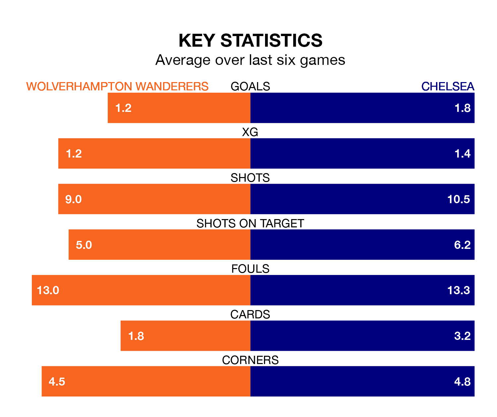

Chelsea are strong favourites to take all three points despite Wolverhampton Wanderers' home advantage in Sunday lunchtime's match at the Molineux Stadium.
*Betting Company* are offering odds of 1.76 on Chelsea sealing the win, with the visitors sitting 11th in the Premier League table.
Wolves, who are 14th in the league and three points behind the Blues, are priced at 3.7 to win. A draw is set at 3.95.
In the last 10 years, Wolves and Chelsea have played each other on 11 occasions. Wolves won three of them, Chelsea four, and they drew four times.
On average, Wolves scored 0.9 goals and the Blues 1.5 in those matches.
Their last meeting was on April 8, when Wolves won 1-0 at home.
Wolves' Pedro Neto is the league's most creative player, racking up seven assists in 10 appearances so far this season.
For Chelsea, Conor Gallagher has set up the most goals, having laid on four assists in 16 games.
With 21 goals in 17 games so far this season, the home team are scoring at below the league average rate with 1.2 goals per game. And they are conceding more than average, letting in 29 goals at a rate of 1.7 per game.
The Blues, meanwhile, are above average scorers, with 1.6 goals per game, compared to a league average of 1.5. They have conceded 1.5 goals per game.
Wolves are in mixed form in the Premier League, with two wins and a draw from their last six games.
And also with two wins and a draw over that period, the visitors' form is identical – they have both taken seven points from 18.
Wolves' last match was on Sunday, a 3-0 loss against West Ham United.
Chelsea beat Sheffield United 2-0 last time out, on December 16, with Cole Palmer and Nicolas Jackson on the scoresheet.
